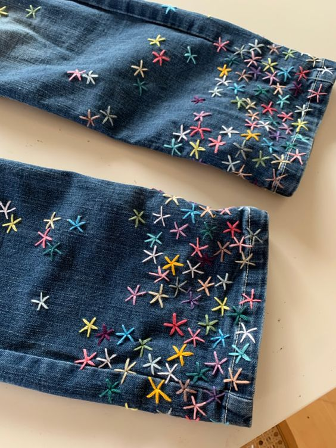
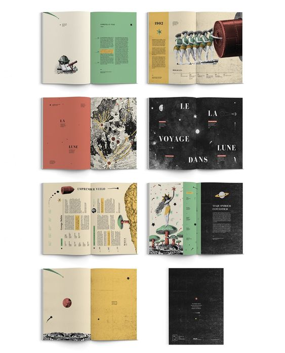
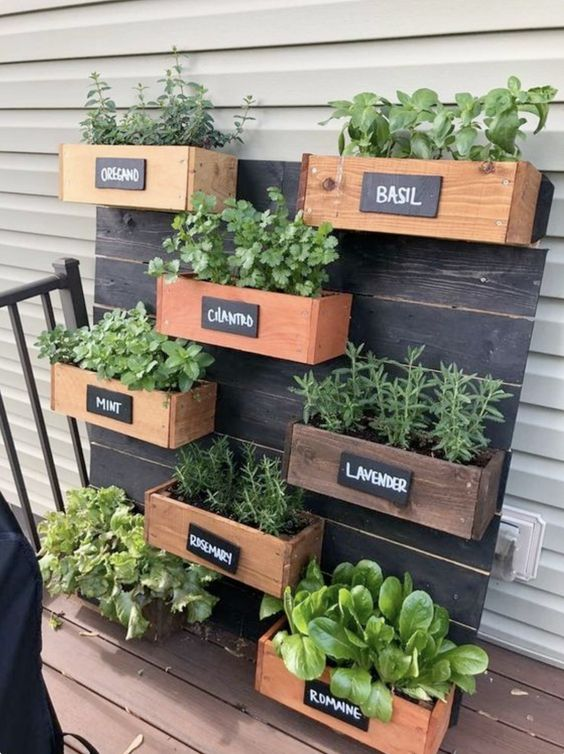

keya pardasani
my work

Over Quarantine, I wanted to pick up a new hobby. During this time, I recently discovered how to showcase my creativity in fashion, and so I decided to pursue this further by learning to sew!! I learned to both sew and crochet over quarantine, and I am working to eventually be able to entirely sew my own clothes! This is something that ties together my love for sustainability and fashion, and as I learn more sewing and crocheting skills, my creativity and designs will get better and better!!

In my involvements, I have had a lot of exposure to using different digital design sites. I have gotten the chance to play around with them and create cool flyers and graphics. I realized I loved the creative freedom of it, and graphic design is a skill I'm acitively working on. I hope to be able to develop a full portfolio of graphic design mockups one day, and I can even use graphic design in my outlines for clothing pieces!
